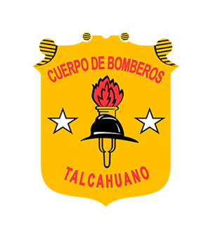
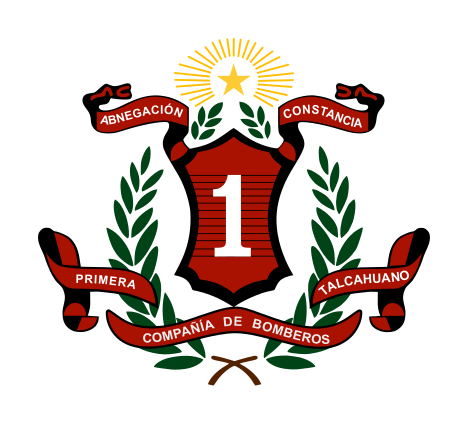
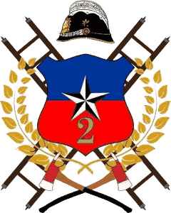
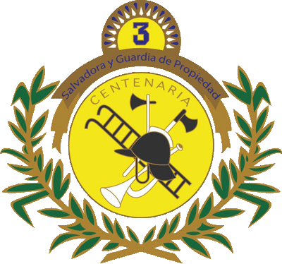
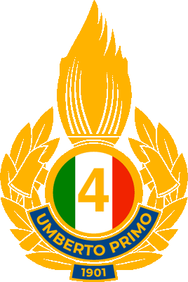
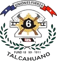
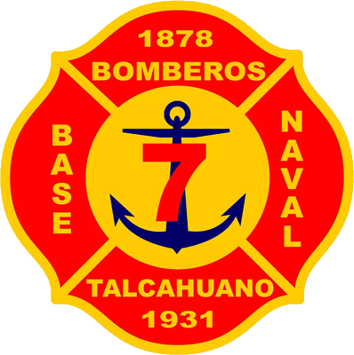
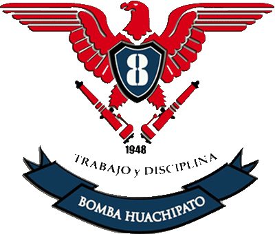
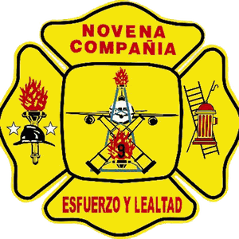
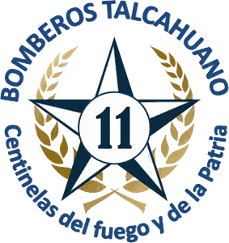

La Quinta es una de las diez compañías del Cuerpo de Bomberos de Talcahuano, que protege la comuna desde 1884. Cada compañía tiene su cuartel, su especialidad y su propia tradición, y todas trabajan en conjunto bajo la Central de Comunicaciones del Cuerpo.Más información en el sitio oficial del Cuerpo: cbt.cl y en Instagram: @cbtalcahuano.
Compañías del Cuerpo

1ª «Eduardo Cornou Chabry»
Fundada el 16 de mayo de 1884
Sector Centro

2ª «Zapadores»
Fundada el 8 de noviembre de 1888
Especialidad: escalas · Sector Brisa del Sol

3ª «Salvadora y Guardia de Propiedad»
Fundada el 30 de julio de 1900
Especialidad: agua · David Fuentes 456

4ª «Umberto Primo»
Fundada el 7 de julio de 1901
Especialidad: agua · Sector Cruz del Sur

5ª «Bomba Chile»
Fundada el 29 de enero de 1908
Especialidad: agua · Villa Independencia

6ª «Salvadora»
Fundada el 18 de diciembre de 1911
Especialidad: agua · Sector Los Cerros

7ª «Bomba Almirante Calixto Rogers»
Fundada el 30 de diciembre de 1931
Especialidad: agua · Base Naval de Talcahuano

8ª «Bomba Huachipato»
Fundada el 8 de octubre de 1948
Especialidad: agua · Sector Las Higueras

9ª «Juan Guillermo Sosa Severino»
Fundada el 31 de enero de 1954
Especialidad: agua · Sector Medio Camino

11ª «Bomba San Vicente»
Fundada el 26 de noviembre de 1961
Especialidad: agua · Sector San Vicente